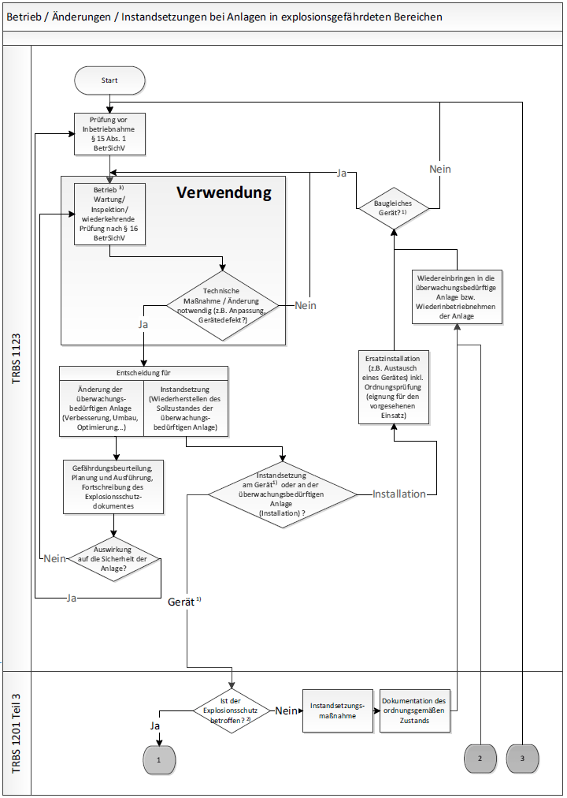
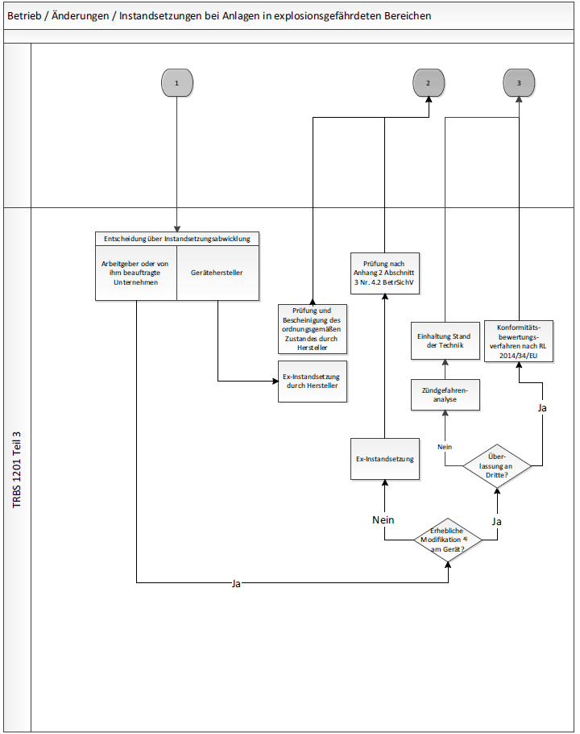

Ablaufschema zu Betrieb/Änderungen/Instandsetzungen bei Anlagen in explosionsgefährdeten Bereichen


Ablaufschema Betrieb/Änderung/Instandsetzung bei "Ex-Anlagen" (Blatt 3, Erläuterungen)
("Ex-Anlage" = überwachungsbedürftige Anlage nach Anhang 2 Abschnitt 3 Nummer 1 BetrSichV)
Die Kennzeichnung am Rand bezeichnet den Teil, der außerhalb dieser Regel liegt.
Fußnoten:
| 1) | Der Begriff "Gerät" umfasst Geräte, Schutzsysteme sowie Sicherheits-, Kontroll- und Regelvorrichtungen nach Richtlinie 2014/34/EU (inkl. Gerätekombinationen, Baugruppen, Verbindungseinrichtungen). |
| 2) | Ermittlung der Relevanz einer Instandsetzung für den Explosionsschutz siehe Abschnitte 3 und 4 dieser TRBS (abhängig von z. B. Komplexität der Instandsetzung, Bedeutung des von der Instandsetzung betroffenen Bauteils für den Explosionsschutz, Verfügbarkeit der notwendigen Informationen wie Herstellerunterlagen). |
| 3) | Wartungs- und Inspektionstätigkeiten sind vom Grundsatz her keine Instandsetzungstätigkeiten, können aber unter Umständen den Ausbau von Teilen notwendig machen, deren Wiedereinbau eine Prüfung vor Inbetriebnahme nach § 15 BetrSichV erfordert. Keinesfalls ist hier jedoch eine Prüfung nach Anhang 2 Abschnitt 3 Nummer 4.2 BetrSichV notwendig. |
| 4) | Zum Begriff der "erheblichen Modifikation" siehe Leitfaden zur Richtlinie 2014/34/EU. Diese Frage stellt sich in Werkstätten, die ein instand zu setzendes Gerät nicht unbedingt an den ursprünglichen Arbeitgeber zurück liefern, sondern unter Umständen ein Gerät nach der Instandsetzung wieder in den freien Warenverkehr geben. |
Erläuterungen zum Ablaufschema:
Das vorliegende Ablaufschema stellt die Abgrenzung der in dieser Technischen Regel behandelten Instandsetzung an Geräten, Schutzsystemen sowie Sicherheits-, Kontroll- oder Regelvorrichtungen im Sinne der Richtlinie 2014/34/EU zur Erfüllung des Anhang 2 Abschnitt 3 Nummer 4.2 BetrSichV einerseits von Instandsetzungen an der Installation bzw. prüfpflichtigen Änderungen der überwachungsbedürftigen Anlage andererseits dar. Darüber hinaus sind einige wichtige Vorgänge, die sich aus der Instandsetzung an Geräten, Schutzsystemen sowie Sicherheits-, Kontroll- oder Regelvorrichtungen im Sinne der Richtlinie 2014/34/EU ergeben können, aber nicht Inhalt dieser Technischen Regel sind (z. B. erhebliche Modifikation an einem Gerät), vom Ablauf her ebenfalls beschrieben.
Die in den Anwendungsbereich dieser Technischen Regel fallenden Vorgänge sind im Ablaufschema durch fett umrandete Felder und fett gezeichnete Linien hervorgehoben (unterer Teil von Blatt 1 sowie linker Teil von Blatt 2) am Rand erkennbar.
Daneben findet man auf Blatt 1 im Wesentlichen Vorgänge, die in Verantwortung des Arbeitgebers der überwachungsbedürftigen Anlage ausgeführt werden. Aus dem Betrieb (inkl. Wartung, Inspektion, wiederkehrende Prüfungen) heraus kann sich die Notwendigkeit einer technischen Maßnahme ergeben. Abhängig von den vorliegenden Randbedingungen wird sich der Arbeitgeber für eine Änderung seiner Anlage oder für eine Instandsetzungsmaßnahme entscheiden. Bei einer Instandsetzung ist wiederum zu unterscheiden zwischen einer Maßnahme an der Installation (z. B. Austausch eines defekten Gerätes gegen ein Ersatzgerät) oder einem Eingriff in ein Gerät, ein Schutzsystem sowie eine Sicherheits-, Kontroll- oder Regelvorrichtung im Sinne der Richtlinie 2014/34/EU. Wenn im letztgenannten Fall darüber hinaus festgestellt wird, dass die erforderliche Instandsetzungsmaßnahme relevant für den Explosionsschutz ist (siehe Abschnitte 3 und 4 dieser Technischen Regel), greift Anhang 2 Abschnitt 3 Nummer 4.2 BetrSichV, und im Ablaufschema erfolgt am Übergabepunkt "1" der Übergang auf Blatt 2.
Neben dem Hauptpfad der "Ex-Instandsetzung" mit Prüfung nach Anhang 2 Abschnitt 3 Nummer 4.2 BetrSichV werden auf dem Blatt 2 des Ablaufschemas Vorgänge beschrieben, die im Instandsetzungs-Unternehmen häufig auftreten können. Dazu gehört z. B. das Überlassen an Dritte, das insbesondere bei sogenannten Pool-Werkstätten (defektes Gerät wird angenommen, ein gleichartiges bereits repariertes Gerät wird an den Arbeitgeber ausgeliefert) regelmäßig vorkommt.
Nach der Instandsetzung (Übergabepunkt "2" im Ablaufschema) wird das betreffende Gerät, das Schutzsystem sowie die Sicherheits-, Kontroll- oder Regelvorrichtung im Sinne der Richtlinie 2014/34/EU wieder in der Anlage installiert. Hier kann es notwendig sein, eine Prüfung vor Inbetriebnahme nach § 15 BetrSichV vorzunehmen, z. B. durch eine zur Prüfung befähigte Person des Arbeitgebers.